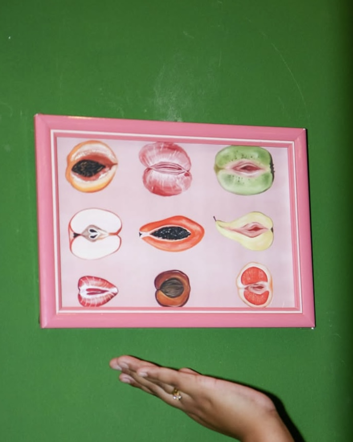
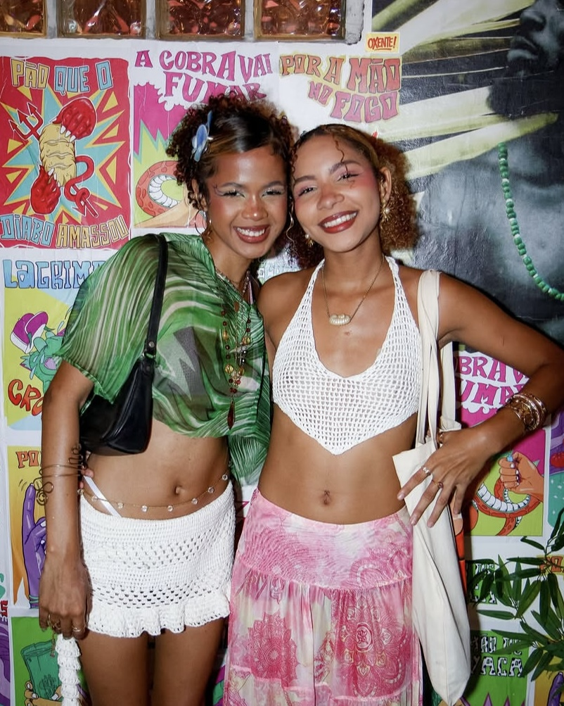
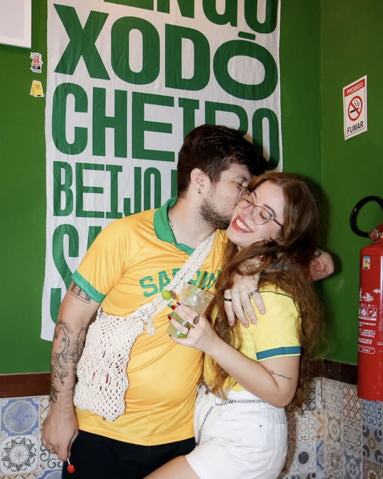
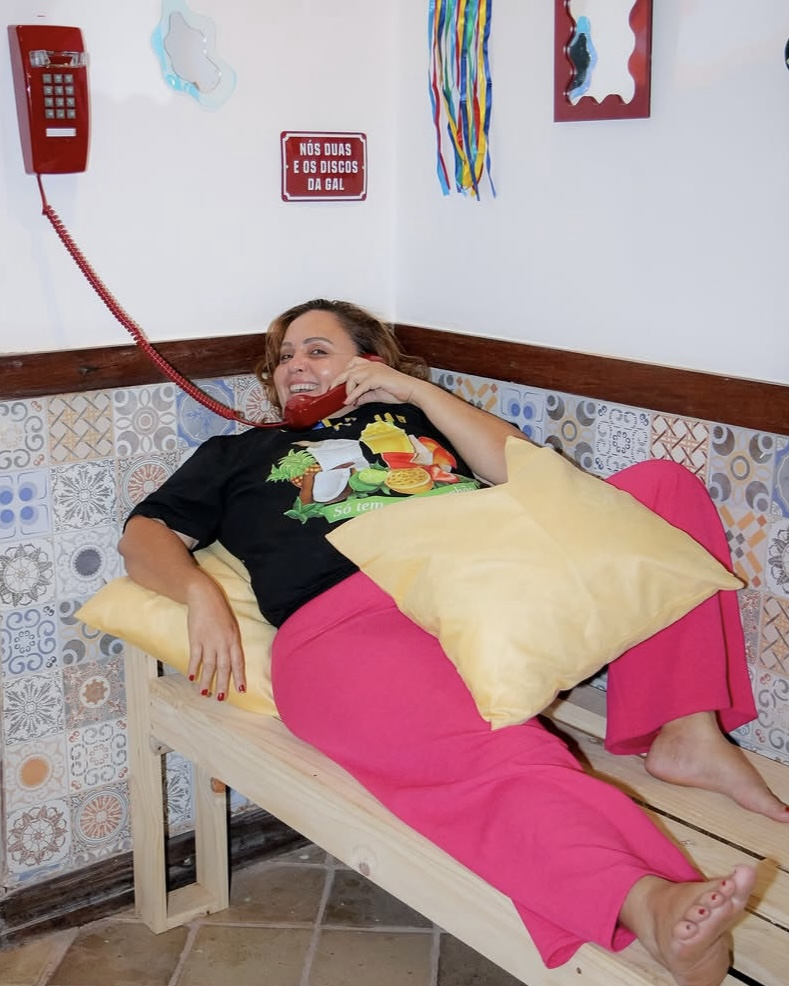
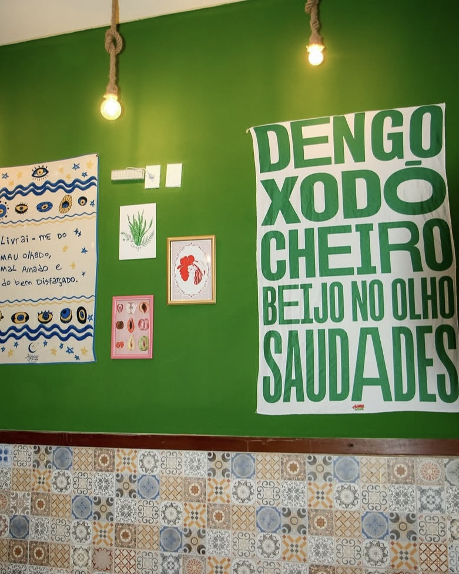
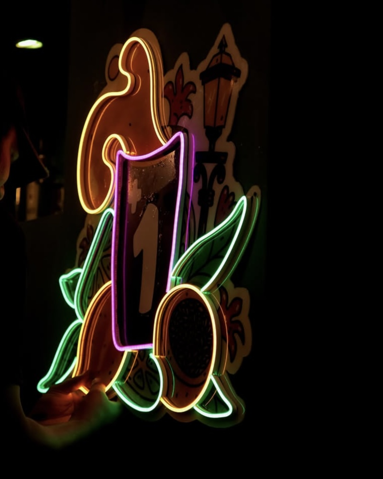

Caipirinhas autorais, agenda cheia de line-up e um espaço LGBTQIAPN+ onde todo mundo é bem-vindo.






A Mais Uma Caipirinha nasceu no Centro Histórico de São Luís e virou point de quem quer boa música, drinks autorais e um lugar pra ser quem é.